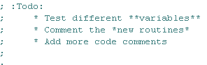
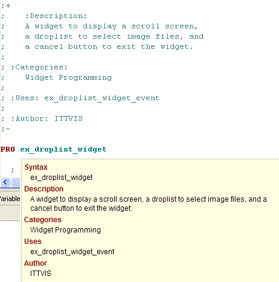

If IDLdoc comment tags are present in a .pro file, the IDL Workbench uses them to format Hover Help for the routine.
IDLdoc supports three format types. (These types are documented in “Getting Started with IDLdoc.” See IDLdoc Resources .) The IDL Workbench recognizes all of the formats, but gives the best results when you use Restructured Text (RST) format.
The following table shows some of the most common RST format tags:
|
Tag |
Description |
|
:Author: |
Name the author of the routine. |
|
:History: |
Describe the development history of the routine. |
|
:Categories: |
Define the type of routine. |
|
:Params: |
Define each parameter. This tag accepts attributes (see below). |
|
:Keywords: |
Define each keyword for the routine. This tag accepts attributes (see below). |
|
:Uses: |
Describe what other routines are called by the routine. |
RST tags are not case sensitive and are enclosed in colon (:) characters. These tags must be the first non-space character on the line (after the comment semicolon). For example:
; :Author: ExelisVIS
Parameters and keywords both accept attributes , which must use a certain format to correctly display in Hover Help.
Attributes within tags must be on the same line and separated by a colon (:).
The following example shows the required spacing and separators between a keyword and an attribute:
; :Keywords:
; keyword1 : In, Type=float
; keyword2 : In, required
For tags with multiple arguments, show the arguments on a separate line, indented at least two spaces (not tab characters):
; :Params:
; x : in, required, type=fltarr
; independent variable
; y : in, required, type=fltarr
; dependent variable
The attributes allowed in IDLdoc are described in the following table:
|
Attribute |
Description |
|
in |
Indicates the parameter is an input. |
|
out |
Indicates the parameter is an output. |
|
optional |
Indicates the argument is optional. |
|
private |
Indicates the argument is not shown if IDLdoc is run in user mode (when the USER keyword to IDLdoc is set). |
|
hidden |
Indicates the argument is not to be shown. |
|
required |
Indicates an argument is required. |
|
type |
IDL data type of the argument. |
|
default |
Default value of the argument. |
Note: IDLdoc formats are documented in the IDLdoc help, which you can find online at: http://www.michaelgalloy.com/lib/idldoc-help.html .
In a code file, you can use the Content Assist feature within comments. After the semicolon (;) that indicates a comment line, type a colon (:) and the Content Assist pop-up window appears:
Select the IDLdoc item from the list and the item is inserted at the cursor.
The following text formatting features have been added to enhance the appearance of Hover Help text that is created in IDLdoc comments:
These styles are all shown in the IDLdoc comments below:

The results of this formatting appear in Hover Help as shown below:
Note: This text formatting is currently available only for Hover Help and does not appear as formatted text in the HTML output generated by IDLdoc.
The following example shows the IDLdoc comments as they appear within the code file and how Hover Help displays when the cursor is over the routine name:

Tip: The IDLdoc formats are documented in the IDLdoc help, which you can find online at: http://www.michaelgalloy.com/lib/idldoc-help.html